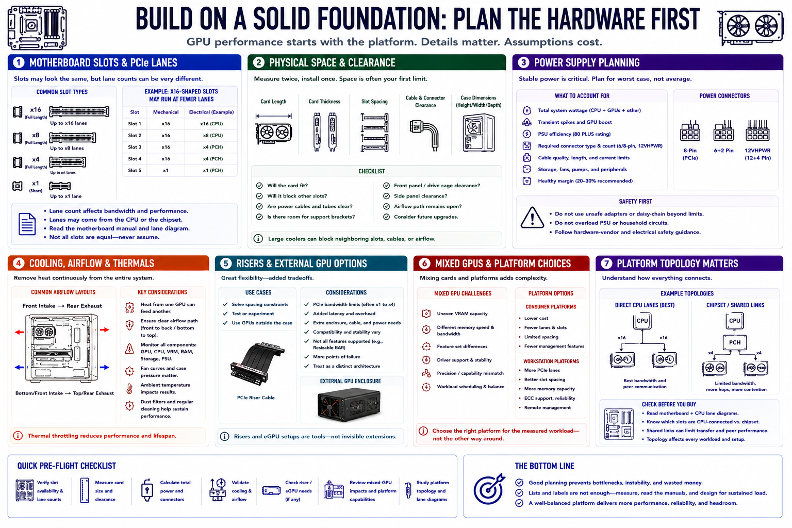

Hardware Requirements
Connecting to LMS... Progress: in progress

Narration
Motherboards must provide physical slots and electrical PCI Express lanes suitable for the chosen GPUs. A full-length connector may operate with fewer lanes than its shape suggests. Consult platform documentation rather than assuming every slot is equivalent.
Physical spacing is often the first constraint. Large coolers can block neighboring slots, cables, or airflow. Chassis dimensions, card length, thickness, support brackets, and connector clearance must be checked together.
Power-supply planning includes total capacity, transient demand, efficiency, connector type, cable limits, CPU and storage load, and margin. Do not improvise unsafe adapters or overload household circuits. Follow hardware-vendor and electrical guidance.
Cooling must remove sustained heat from every card, the CPU, memory, storage, and power components. One GPU can feed hot exhaust into another. Airflow path, fan behavior, ambient temperature, dust filters, and noise targets matter.
Risers and external-GPU arrangements can solve spacing or experimentation needs but add bandwidth, enclosure, cable, power, compatibility, and support considerations. They should be treated as distinct architectures, not invisible extensions.
Mixed GPUs complicate memory balance, speed, features, driver support, precision, and scheduling. Workstation platforms may offer more lanes, spacing, memory, and management than consumer systems, but they add cost. Choose around the measured workload.
Platform topology includes how slots connect to the CPU, chipset, and memory. Shared links or indirect paths can affect transfer and peer communication. Read the motherboard and processor lane diagrams before purchase.